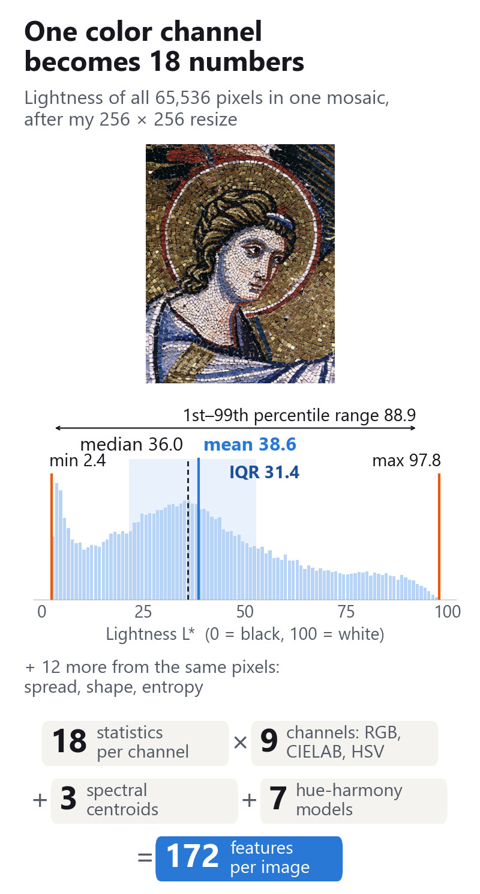
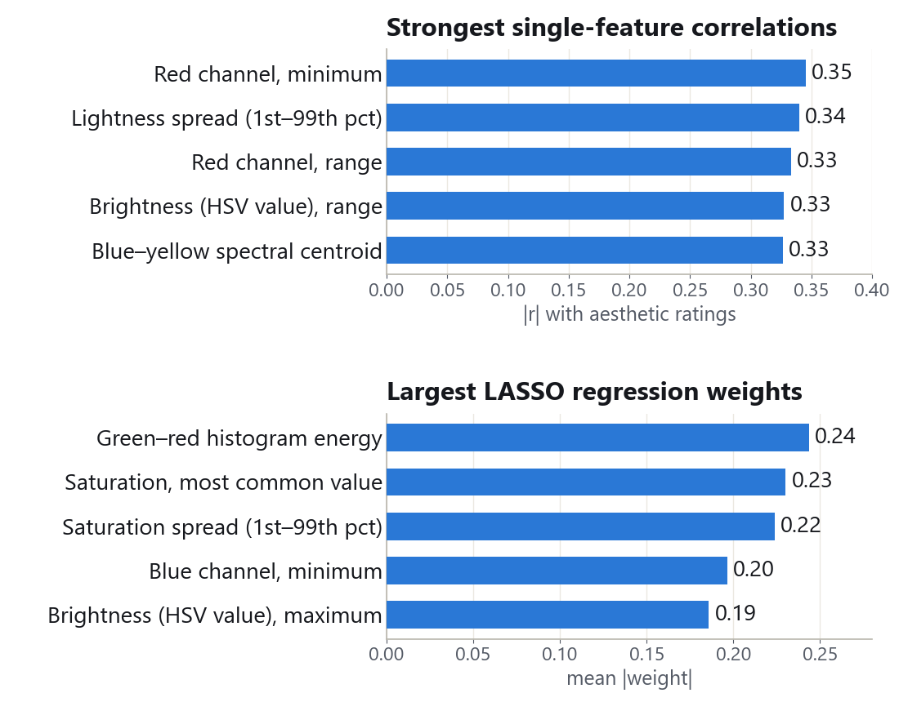
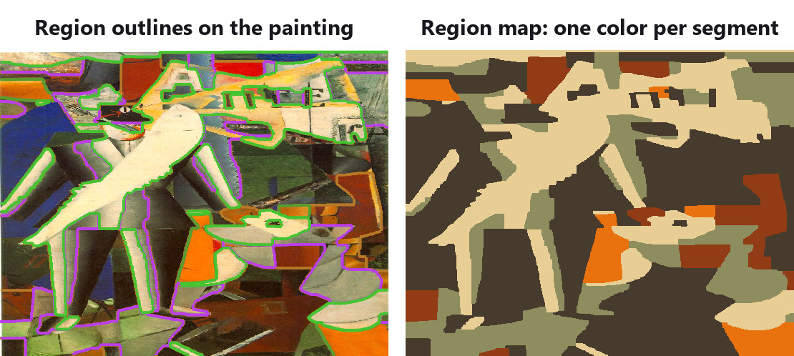
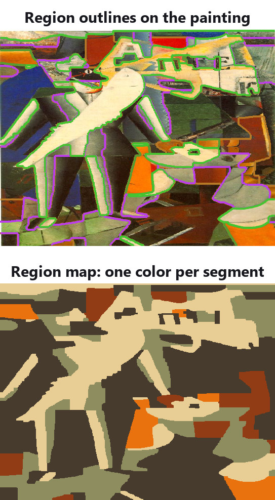
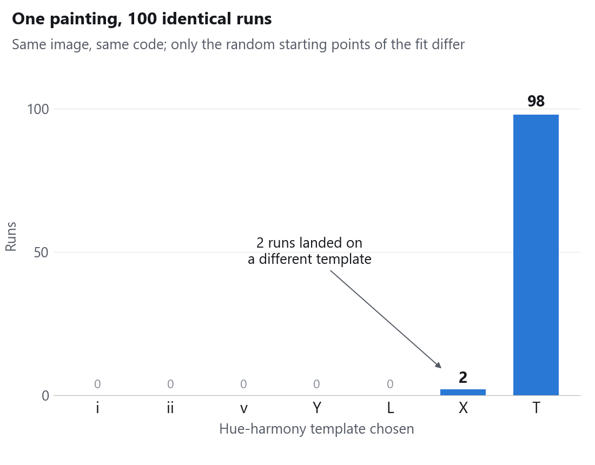

Neuroaesthetics research · WashU · 2025
Measuring why people like mosaic art: a benchmarked 982-image feature pipeline
I wrote the MATLAB feature extractor for a WashU study of why people like mosaics. It turns 982 mosaics into 172 features each (color, brightness, fine vs. coarse detail). Benchmarked against a published study, it reproduces the original's average color and brightness measures (9 of 18 global features at |r| ≥ 0.7), not yet its hue-count, blur or segment-shape features. On 70 pilot images, the team ranked features against ratings with my table.
- My role
- Undergraduate researcher; image feature extraction and benchmarking
- Team
- Research team led by Prof. Ralf Wessel (WashU Physics)
- Timeline
- Jan to Aug 2025
- Tools
- MATLAB, C++ MEX, kernel graph cuts, SRM, SAM2
 1
2
3
1
2
3

1 2 3- Input: Pietro Cavallini, Annunciation (detail), 1296 to 1300, public domain, resized to 256 × 256.
- Six of the 18 statistics, on the lightness histogram.
- Repeated on 9 color channels, plus frequency and color-harmony features.
My contributionWhat I did
![Bar chart of the published study's 83 features in four families, each bar showing its best absolute correlation with any of my features. 30 bars reach the dashed line at |r| = 0.7: 9 of 18 global color and brightness features, 3 of 7 hue-harmony models, 17 of 53 segment-based features, and 1 of 5 high-level human-rated features. Seven of the segment-based matches are hatched: their best match is an SRM region, entropy, or aspect-ratio feature that is not in the final 172. Two hue-model bars are n/a.](../assets/img/mosaic-aesthetics/validation-narrow.png)
- Global color and brightness: 9 of 18 match, the part of the table I trust.
- Hatched: ported region code I later set aside; it checks my port, not new measurements.
- Most segment-shape features are not matched yet.
- Revived the original study's MATLAB code on Windows: rebuilt its C++ binaries and checked outputs against stored values (Figure 5).
- Engineered a new extractor: 18 statistics on each of 9 color channels plus FFT spectral centroids, reusing the original's 7 hue-harmony models (Figure 1).
- Benchmarked it against the original 83 features (Figure 2): 23 matched in my first pass, 30 with its hue and region code ported.
- Diagnosed randomness: the hue-model choice changed in 2 of 100 repeat runs (Figure 6); graph-cut segments shift too.
- Evaluated graph cuts and SAM2 for tile-level features; prototyped HOG features for andamento, the tile flow.
- Delivered the feature table for our pilot analysis (Figure 4); co-authored our poster and abstract with Cici Zhao and Prof. Ralf Wessel, presented at the Spring 2026 Undergraduate Research Symposium.
MotivationWhy it mattered
- 01 Team982mosaic images from about 70 artists plus a “Byzantine” set
- 02 Me256²resize; convert to RGB, CIELAB and HSV
- 03 Me172features per image: color, frequency, hue harmony
- 04 Me826paintings from the original study: the benchmark (Figure 2)
- 05 Team70 × 5pilot mosaics × online ratings (1 to 4 scale)
- R&D MeTile and region features: graph cuts, SRM, SAM2, HOG flow. Explored, not yet in the final 172.
A 2021 study by Kyo Iigaya (a collaborator on this project) and colleagues predicted people's ratings of paintings from simple and complex visual features. Does that hold for mosaics, with their tiles (tesserae) and tile flow (andamento)?
Objective for my piece: build a feature table for about a thousand images, benchmark it against that study, and hand it to a model with only a few hundred ratings.
- Team
- 9 on the roster, led by Prof. Ralf Wessel; I built low-level features with Prady Sepulveda
- Timeline
- Research Jan to Aug 2025 (spring, then summer); poster and abstract presented at the Spring 2026 Undergraduate Research Symposium
- Ratings cost
- ~$10 per participant-hour on Prolific (team estimate); pilot: 350 ratings
- Tooling
- Legacy MATLAB/C++ code built for macOS, rebuilt for Windows; no labeled data for deep models
ResultsHow it measured up

- Simple color and brightness statistics lead, but all correlations are modest (|r| 0.33 to 0.35); with 172 features and 70 images, this could be chance.
- LASSO, a regression that keeps few features, ranks a different set of simple statistics.
- ✓ MetFeature table for about 1,000 images. 982 images, 979 extracted cleanly, 172 features each.
- ◐ PartlyReproduce the published baseline. Average color and brightness, yes (9 of 18 global features); hue-count, blur and segment shape, not yet.
- ○ Not yetMosaic-specific tile and flow features. Graph cuts, SRM, SAM2 and HOG explored; none in the final 172.
- ◐ PreliminaryFind features that track ratings. The pilot ranks candidates; with no held-out or chance-level test yet, no model is validated.
What I learned
Validation had to come before modeling. Most of my time went into checking numbers: rebuilding legacy code, matching it feature by feature, chasing randomness in two algorithms. That is how I know which parts of the table to trust. When my weekly updates were not landing, I also began opening them with plain definitions of each feature.
Technical detailsHow it works

1 2
1 2- Outlines follow color edges, not objects.
- Every cream patch is one scattered segment, so I also tested SRM, which merges only neighboring regions.

Methods in depth
Dataset
982 mosaic images (931 JPG, 31 PNG, 20 JPEG), each named with a 5-digit ID and its source, for example 00100byzantine. The files come from about 70 artists plus a set the team labeled “Byzantine”. The team assembled the collection; I built the feature table on top of it.
Preprocessing
Each image is resized to 256 × 256, scaled to [0, 1], and converted to CIELAB, HSV, and HSL. The square resize distorts proportions, so I also wrote an aspect-preserving version that pads with NaN and returns a mask of real pixels; it is not yet used in the final table.
Features (172 per image)
- First-order statistics (162): 18 per channel on 9 channels: mean, median, mode, min, max, range, 1st to 99th percentile range, standard deviation, IQR, median absolute deviation, skewness, kurtosis, coefficient of variation, RMS, 10% trimmed mean, histogram entropy, histogram energy, and Wasserstein distance to a standard normal.
- Spectral centroid (3): the power-weighted average spatial frequency of each CIELAB channel from a 2-D FFT. Plainly: does the image's detail sit in fine tile texture or in broad color fields?
- Hue-harmony models (7): the original study's code for which of 7 classic color-harmony templates (Li & Chen, 2009) fits the image best, stored as 7 one-hot columns. The fit starts from random points, which is the source of the stochasticity I traced.
Ten images get NaN only for hue and saturation skewness and kurtosis, where those statistics come out undefined; three images errored and are kept as all-NaN rows instead of disappearing, so 979 of 982 rows are complete or nearly complete.
Benchmark against the original study (Figure 2)
The original study's 826 paintings (abstract, color field, cubism, impressionism) came with 83 precomputed features. I computed my features on the same images and, for each original feature, kept the best absolute correlation |r| with any new feature. My first pass used 165 features (first-order statistics and spectral centroids, all of them in the final table) and matched 23 of 83 at |r| ≥ 0.7: 9 global, 1 high-level, and 13 segment-based. I then added the original study's hue-model code and my port of its SRM region, global entropy, and aspect-ratio code, and 30 of 83 matched (Figure 2). In that run, 10 of the 30 best matches (the 3 hue models and the 7 hatched bars) come from the original's own computations, so they confirm my port works rather than add new measurements. The SRM, entropy, and aspect-ratio features are not in the final table, and the 23 solid bars are a different set from my first-pass 23. The final 172 on their own have not been re-benchmarked. Two hue-model features are n/a (no correlation could be computed). I also asked whether 0.7 is the right threshold, since at 826 images every match that high is significant (p ≪ 10⁻¹⁰⁰). Some matches are proxies rather than copies: a human-rated “temperature” score tracks the image's mean blue-yellow value (|r| = 0.70), and the horizontal center of the largest segment is best matched by image aspect ratio (|r| = 0.78).
Randomness (Figure 6)
When I compared hue models with the original study's, 67 images disagreed. The template fit starts from random points; on one test image, 98 of 100 repeat runs chose the same model. Graph cuts start from randomly initialized color clusters, so segment features also vary: across repeat runs on the example paintings, the second-largest segment varied far more than the largest, and the largest single swing was 139% in the largest segment's mass skew (a shape statistic).
Segmentation and flow (Figure 5)
Kernel graph cuts (Salah et al., 2010) cluster pixels by color with a smoothness penalty α, and the original pipeline adjusts α until at least three segments appear. Their segments can be spatially scattered and depend on initialization, so I also tested statistical region merging (SRM), which only merges neighboring regions. In team reviews we found that algorithmic segments do not match how people divide a picture; for example, they do not isolate faces. For tile-level features I evaluated SAM2 alongside graph cuts. For andamento, I tested HOG (histograms of oriented gradients) at 8, 16, and 32 pixel cells and prototyped an orientation-coherence score across SRM regions. These segmentation and flow features were explored but are not in the final 172-feature table.
Pilot analysis (Figure 4)
Raters used a 1 to 4 scale (“not at all” to “very much”) with attention checks. Using my feature table, we ranked features by their correlation with the ratings and by average absolute weight in LASSO, a regression that shrinks weak features to exactly zero; this analysis ran in Python. No held-out test score or chance-level (permutation) comparison is reported yet, which is why I call these results preliminary.
Next steps
Fix random seeds and log run-to-run variance from the start, re-benchmark the final 172 features on their own, bring the segmentation and flow features into the table, and test the model on held-out images once the full study (about 1,500 planned participants) is in.